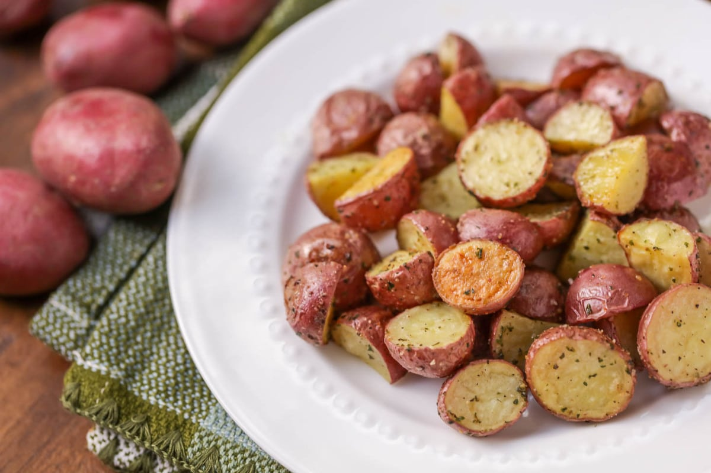

Oven Roasted Red Skin Potatoes

Description
These crispy, delicious, easy to make potatoes are so good you can eat them with anything!
Ingredients
- Nonstick cooking spray
- 1 Lb small red skin potatoes
- 1 1/2 tsp olive oil
- 1/4 tsp salt
- 1/4 tsp pepper
Steps
- Preheat the oven to 425℉. Line a 15 x 10 x 1 inch baking pan with foil and lightly coat with cooking spray.
- Quarter or halve the potatoes. (You want about 1 inch pieces)
- In a large bowl, toss potatoes with olive oil, salt and pepper.
- Arrange the potatoes in a single layer on the prepared baking pan.
- Roast for 25 to 30 minutes or until outsides of the potatoes are lightly brown and cripsy and centers are tender. Stir at least once.